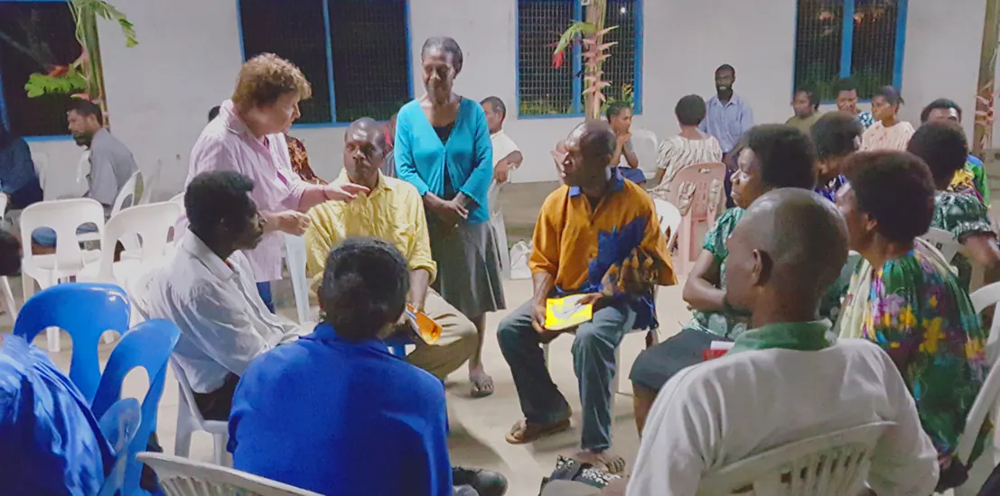

Daily Bible Reading
Read the entire Bible through in one year by joining us each day. You can start anytime.
Loading today's readings…
Loading this week's devotion…
Loading today's Gold Nugget…
Take EPHOD with you
EPHOD PH and EPHOD PNG put the daily readings, memory verse, Gold Nugget, a journal and a progress tracker on your phone. Everything works offline once the Bible is downloaded, so a day's reading never costs you data.
EPHOD PH
Philippines and worldwide · English, Tagalog, Chinese
EPHOD PNG
Papua New Guinea · English, Tok Pisin and 200+ PNG languages
Discipleship: it's a biblical lifestyle
EPHOD stands for Every Person, Household, Oikos — Discipled. It is putting the promises of God's Word into practice in your daily life. The result is spiritual growth.
Disciple, the noun
"If ye continue in my word, then are ye my disciples indeed." John 8:31
Disciple, the verb
"Therefore go and make disciples of all nations, baptizing them in the name of the Father and of the Son and of the Holy Spirit." Matthew 28:19
EPHOD in action
Follow the EPHOD 10 Point Plan and watch your spiritual life flourish as you become a better disciple and disciple maker.
The EPHOD 10 Point Plan
Click each point to expand.
Daily Bible reading
"If ye continue in my word, then are ye my disciples indeed: and ye shall know the truth, and the truth shall make you free." John 8:31–32 KJV
Daily Bible reading lets you discover the truths of God's Word and find His plan for your life. Read it every day.
Weekly Scripture memorization
"Guard my words as your most precious possession. Write them down, and also keep them within your heart." Proverbs 7:2–3 TLB
Memorizing a verse gets God's Word into your heart and mind. When problems come, the Scripture you have memorized can help you overcome fear and comfort you in a time of need.
Sunday school and worship
"You should not stay away from the church meetings, as some are doing, but you should meet together and encourage each other." Hebrews 10:25 NCV
Attending church helps you and others stay strong in faith. A burning coal burns brightly next to other coals; a coal by itself burns out.
Weekly care cell, small group or Bible study
"They read from the Book of the Law of God, making it clear and giving the meaning so that the people could understand what was being read." Nehemiah 8:8 NIV
Members share thoughts from their EPHOD journal about the daily reading, notes from the Sunday sermon, the memory verse, and their questions — and get answers from the group.
Devotional journal
"Write my answer in large, clear letters on a tablet, so that a runner can read it and tell everyone else." Habakkuk 2:2 NLT
A journal is any notebook or device where you record your thoughts. People forget most of a Sunday sermon by Tuesday; writing it down lets you review what you learned, share it with your small group, and remember what God has done for you.
Pray and fast one meal each week
"This kind can come forth by nothing, but by prayer and fasting." Mark 9:29 KJV
"This kind" refers to the difficult situation that needs increased faith. Fasting and prayer increase your faith and your sensitivity to the Holy Spirit, especially when you need God's guidance in a decision.
Sharing or witnessing Jesus
"Go home to your family and tell them how much the Lord has done for you, and how he has had mercy on you." Mark 5:19 NIV
Sharing is telling someone what Jesus has done for you. If they ask what Jesus can do for them, and you show them in the Bible, that is witnessing.
Tithes and offerings
"Bring to the storehouse a full tenth of what you earn so there will be food in my house. Test me in this, says the Lord All-Powerful." Malachi 3:10 NCV
Give tithes and offerings where you worship — God's storehouse for you. As you test this principle, you will watch God multiply what you have left to meet your needs.
Daily prayer and worship time
"In the morning, O Lord, you hear my voice; in the morning I lay my requests before you and wait in expectation." Psalm 5:3 NIV
Prayer is the expression of your worship, praise and faith. Time set apart for God gives Him room to speak to you, and gives you room to bring Him your requests.
Take notes in services
"Write this on a scroll as something to be remembered, and make sure that Joshua hears it." Exodus 17:14 NIV
Notes on Sunday's sermon, written in your journal, help you review during the week and share the points with your household, friends and small group.

Small groups
Small groups are the most effective way to disciple people.
"Then Jesus directed them to have all the people sit down in groups on the green grass." Mark 6:39
Each week the group shares what God showed them in the daily reading, discusses the memory verse, and prays for one another. That is where a plan becomes a lifestyle.
EPHOD Church Strengthening Seminars
Thirteen seminars that show you how to be a true disciple and disciple maker of Jesus Christ.
Developed by Herb and Karen Johnson over decades of ministry, and taught across the Philippines, Papua New Guinea and beyond. A new online course is being prepared.